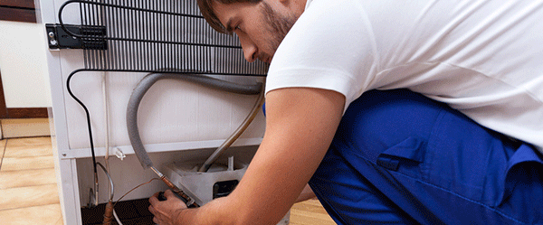

Albañilería
Herrería
Plomería
Pintura
Refrigeración
Demolición
Albañilería
Se lleva a cabo todo tipo de trabajos de albañilería, coordinando todos los oficios y gremios que intervienen hasta la total terminación de la obra, lo cual abarata los costes y agiliza el trabajo. Se realizan con la mayor rapidez y seguridad, logrando unos acabados perfectos.

Herrería
Se trabaja con materiales de primera marca, lo que garantiza un producto de calidad. Las obras realizadas muestran estilo, calidad y diseño. La capacitación constante, suma de nuevas tecnologías y métodos de fabricación.
Plomería
Se efectúa todo tipo de instalación, mantenimiento, reparaciones y todo lo relacionado con redes hidráulicas y sanitarias, además de sondeo y limpieza de tuberías de agua potable con equipos especializados para ello, generando así solución a las bajas presiones de agua.

Pintura
Se elabora todo tipo de trabajos de pintura en edificios, viviendas, locales, oficinas, garages, etc. Profesionales en la preparación de soportes enduído y alisado de superficies. Se crean espacios confortables donde se disfrute de un ambiente personalizado.

Refrigeración
Se hacen servicios de mantenimiento de excelente calidad técnica a sistemas de refrigeración y aire acondicionado para así optimizar el funcionamiento de estos equipos y reducir costos. Así mismo, realizar el plan de recuperación de refrigerantes.
Demolición